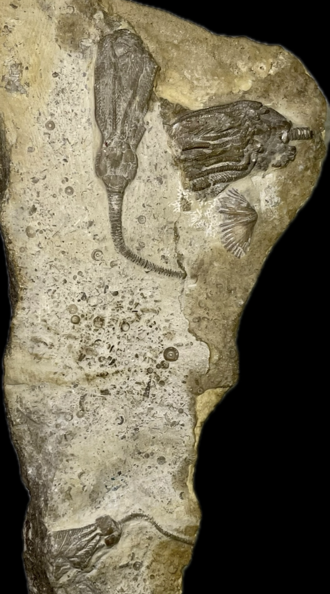
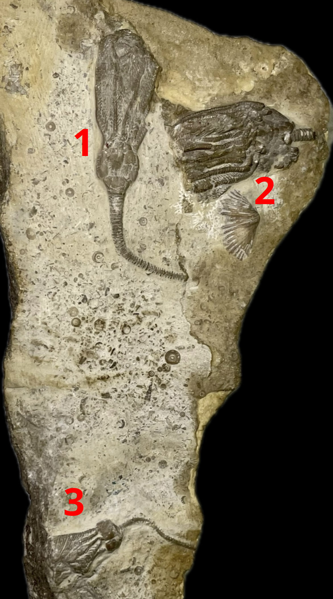
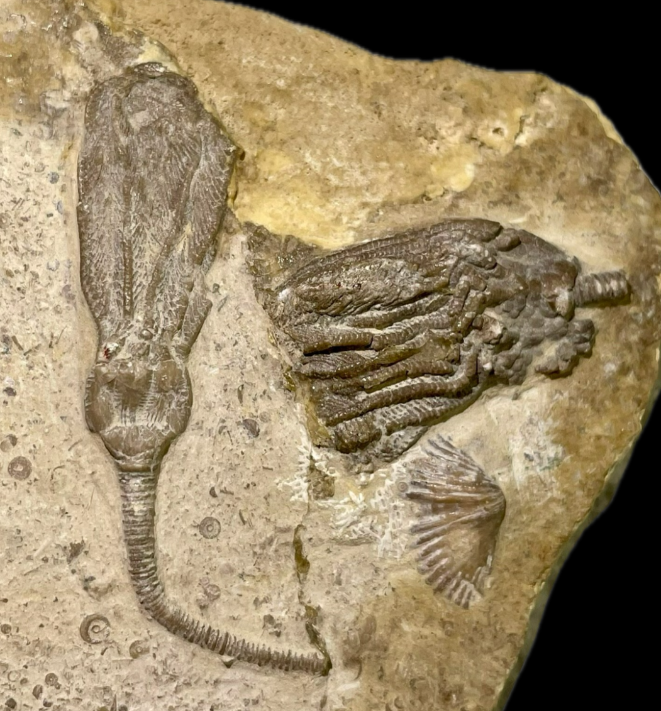
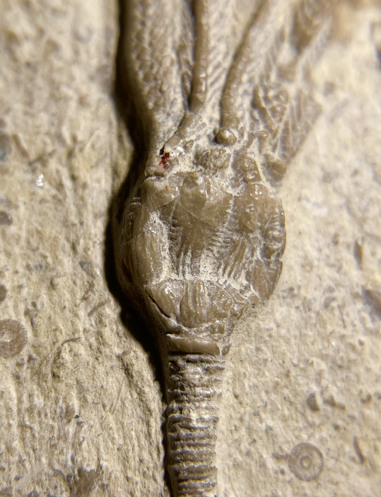

Crinoid
Size: 3 cm crown for the Dichocrinus
1. Dichocrinus cinctus is characterized by ornate striations on the calyx and a relatively thin, elongated crown with delicate arms and very short pinnules (Laudon & Beane 1937). It appears to be a fairly rare crinoid from Le Grand, as I have only seen a handful of actual specimens including the two in my collection. |
 |
|---|
Copyright © 2024 by Samuel Kim, all rights reserved